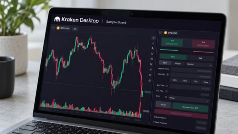
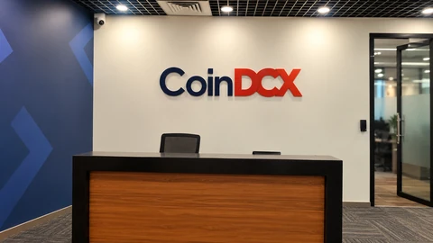

Crypto
Bitcoin, Ethereum, stablecoins and the financial systems taking shape around them.
Crypto prices
Ethereum ETH
USD · BitstampSolana SOL
USD · CoinbaseXRP XRP
USD · BitstampUSD quotes from Bitstamp for Bitcoin, Ethereum and XRP, and Coinbase for Solana. Each chart shows the past day. Prices can differ between exchanges.
Latest news

Crypto
Bithumb Reports Data Breach as South Korea Reviews Financial Cyberattacks
The exchange is investigating whether customer information was exposed. It says the affected employee system is separate from its trading platform.
Crypto
Robinhood’s Crypto Revenue Falls 55% Despite Record Company Sales
Crypto trading weakened while options and equities grew. Robinhood reported record revenue, but net income fell to $476 million.

Crypto
Nasdaq-100 Fund Launches on Stellar, With U.S. Investors Excluded
Janus Henderson and Centrifuge announced JQQQ, a tokenized index fund. Its legal structure and investor restrictions matter as much as its blockchain.

Crypto
Circle and ACI Plan a USDC Settlement Pilot in Colombia
The initiative tests stablecoin settlement alongside existing banking infrastructure. It does not announce a nationwide USDC rollout or replace Colombia’s peso payments system.

Crypto
Zcash Developer Proposes Redirecting the Grants Program’s 8% Subsidy to a Network Reserve
Sean Bowe’s draft leaves existing grant funds in place. Its $125 million treasury estimate depends on an assumed ZEC price, and no activation height is assigned.

Crypto
Ripple Says It Has Final U.S. Approval for Its National Trust Bank
The company says the charter covers RLUSD reserve management and institutional custody. Stablecoin issuance remains with its New York-regulated subsidiary.

Crypto
Kraken Parent’s U.S. Hyperliquid Futures Plan Takes a Testnet Step, With Approval Still Pending
Hyperliquid confirmed Payward’s intended role and outlined optional account restrictions. The proposed U.S. offering has no announced launch date or approval.

Crypto
U.S. Bank Regulator Urges Community Banks Into Stablecoins as Licensing Deadline Nears
The OCC is encouraging smaller lenders to explore payment tokens, while its official implementation page says applications and waiver requests are not yet open.

Crypto
Bitcoin Retests $80,000 as Fed Week Opens With Investors Cutting Risk
Bitcoin recovered an early dip below $80,000 as traders weighed AI-market worries, recent ETF withdrawals and Wednesday’s Federal Reserve decision.

Crypto
Aviva Investors Launches Tokenized Sterling Fund Class on XRP Ledger
Aviva seeded the new fund share class with £50 million; the launch adds blockchain access to an existing sterling money-market portfolio.

Crypto
Bloom Trading Bot Promises Repayment After Reported Wallet Drains
Reports trace about 9,408 SOL to a suspected drainer while Bloom says it will reimburse confirmed losses; the cause and final scope remain unresolved.

Crypto
CoinDCX Confirms $15.99 Million Loss After Old-Wallet Sweep Failure
CoinDCX says it will absorb a 15.99 million USDT loss after a failed sweep service left deposits in previously compromised wallet infrastructure.
Understand crypto
Start with the mechanics: ownership, payments, leverage and market rules.

Crypto explainer
Explaining a Crypto Rally Requires More Than a Headline
Policy news, financing conditions and trading positions can coincide. Establishing their contribution requires a timeline and evidence.

Crypto explainer
Reading the CLARITY Act's Proposed Crypto Market Structure
The House-passed 2025 text describes a regulatory framework. Its provisions and legislative status must be distinguished from current requirements.

Crypto explainer
A Bitcoin Miner Sells Computing Work Against a Volatile Reward
Power, equipment efficiency and network competition shape mining returns. Production volume alone cannot establish profitability.

Crypto explainer
DeFi Moves Financial Rules Into Software, but Leaves Risks Behind
Lending pools and automated exchanges depend on collateral, code and price inputs. Decentralization does not remove every intermediary or point of control.
Browse by topic
Reporting and explainers from the full archive.
Crypto, stablecoins and market structure (46)
- Bithumb Reports Data Breach as South Korea Reviews Financial Cyberattacks
- Robinhood’s Crypto Revenue Falls 55% Despite Record Company Sales
- Nasdaq-100 Fund Launches on Stellar, With U.S. Investors Excluded
- Circle and ACI Plan a USDC Settlement Pilot in Colombia
- Zcash Developer Proposes Redirecting the Grants Program’s 8% Subsidy to a Network Reserve
- Ripple Says It Has Final U.S. Approval for Its National Trust Bank
- Kraken Parent’s U.S. Hyperliquid Futures Plan Takes a Testnet Step, With Approval Still Pending
- U.S. Bank Regulator Urges Community Banks Into Stablecoins as Licensing Deadline Nears
- Bitcoin Retests $80,000 as Fed Week Opens With Investors Cutting Risk
- Aviva Investors Launches Tokenized Sterling Fund Class on XRP Ledger
- Bloom Trading Bot Promises Repayment After Reported Wallet Drains
- CoinDCX Confirms $15.99 Million Loss After Old-Wallet Sweep Failure
- Bitcoin returns above $80,000 after a weekend slide as geopolitical risk meets ETF outflows
- South Korea moves toward another crypto-tax delay, with a legal change still needed
- Electrum updates Bitcoin wallet after finding a transaction-replacement risk
- Tether wins 15 industry commitments for software linking Bitcoin mining equipment
- Crypto app EtherFi buys Zeal assets as wallet users face a December move
- Initia halts its blockchain after an exploit, with about $2.7 million reportedly bridged out
- Phantom brings Kalshi prediction markets to US crypto-wallet users
- Ripple, Visa and Mastercard join Singapore-led digital-money push
- HSBC launches RedCoin payments, keeping the stablecoin inside its own network
- SoFi launches a 4.40% tokenized deposit with a bridge to crypto
- Fireblocks Denies Visa Takeover Talks After Report of a $2.5 Billion Deal
- Ethereum’s New Consensus Draft Targets a Fourfold Cut in Finality Time
- Coinbase Ireland Agrees to €3.25 Million Safeguarding Penalty
- Bitcoin Retreats Toward $82,000 After Its Push Near $85,000 Fades
- OCC Finalizes Stablecoin Rules Ahead of January 2027 Compliance Deadline
- Grayscale Opens In-Kind Subscriptions Across 10 Crypto Investment Products
- Solana Lists Alpenglow as Active on Mainnet, Targeting Faster Finality
- SBI and Shinhan Card Plan Yen Stablecoin Payment Tests Between Japan and Korea
- Bitcoin Rebounds Above $82,000 as Oil Retreats
- Chip-Stock Perpetuals See $52 Million Liquidated During Weekend Trading
- Circle Defends USDC's Revenue Model as Stablecoin Competition Intensifies
- Turkey Confirms Richard Heart’s Detention and Reports $7.15 Million Cash Seizure
- Broadcom, Verizon and CoreWeave Object to Stock Tokens on OKXICE
- Bitcoin Breaks Below $80,000 as Inflation Shock and AI Selloff Hit Crypto
- Explaining a Crypto Rally Requires More Than a Headline
- Reading the CLARITY Act's Proposed Crypto Market Structure
- A Bitcoin Miner Sells Computing Work Against a Volatile Reward
- DeFi Moves Financial Rules Into Software, but Leaves Risks Behind
- What a Majority Hash-Power Attack Can Do to Bitcoin
- Crypto Liquidation Begins Before All the Margin Is Gone
- US Crypto Taxes Begin With the Type of Transaction
- What a Bitcoin ETF Changes About Ownership
- A Stablecoin's Peg Depends on Its Backing and Redemption
- Bitcoin Halvings Change Supply, Not the Rules of Valuation